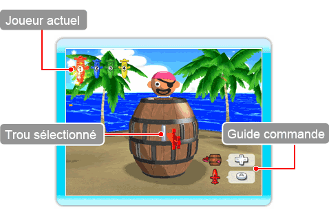
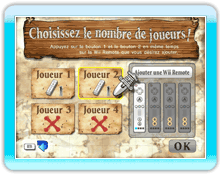
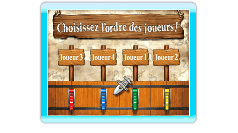

9 |
Pop-Up Party |
 |
|
Les joueurs transpercent le tonneau avec des épées chacun à leur tour. Chaque joueur essaient de mettre le plus d'épées possible. Mais attention ! Si vous enfoncez votre épée dans le mauvais trou, le Capitaine s'envolera dans les airs et vous avez perdu !
Sélectionnez Pop-Up Party depuis l'écran du menu principal puis choisissez le nombre de joueurs ainsi que l'ordre dans lequel ils jouent. Vous passez ensuite à l'écran de jeu Pop-Up Party. ● Écran de jeu ● Règles du mode Pop-Up Party

● Choisir le nombre de joueurs ○ Ajouter une Wii Remote ● Ordre des joueurs  Une fois que vous avez choisi le nombre de joueurs, vous devez définir l'ordre dans lequel chacun va jouer. L'ordre est aléatoire à chaque partie. |
 |
 |
 |